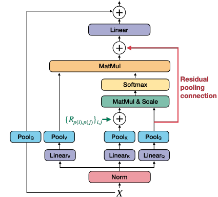

Introduction
This post provides an overview of the paper MViTv2: Improved Multiscale Vision Transformers for Classification and Detection with a focus on the upgrades to the pooling attention in the previous MViT architecture. Also, this post dives into the official PyTorch implementation of MViTv2.
Building on MViT, MViTv2 introduces two improvements to pooling attention: shift-invariant positional embeddings and a residual pooling connection. These enhancements lead to better performance in image and video recognition tasks.
The improved pooling attention is shown in the figure below:

Decomposed Relative Position Embeddings
A shortcoming of MViT is that it uses absolute positional embeddings, which are not “shift-invariant”. The interaction between two patches will change depending on their absolute positions in the image (even if their relative positions remain the same).
“Shift-invariance in vision” refers to a fundamental property where the recognition or detection of a visual feature should remain consistent regardless of where it appears in an image. In simple terms: if you can recognize a cat in the top-left corner of an image, you should also recognize that same cat if it appears in the bottom-right corner. The object’s identity doesn’t change just because its absolute position in the image has changed.
To address this shortcoming, the paper introduces decomposed relative position embeddings that encode the relationship between patches (“this patch is 2 positions to the right and 1 position down from that patch”) rather than their absolute locations. This makes the model shift-invariant - it can recognize the same spatial patterns regardless of where they appear in the image.
The authors encode the relative position between two input elements, \(i\) and \(j\) into positional embedding \(R_{p(i), p(j)} \in \mathbb{R}^d\) where \(p(i)\) and \(p(j)\) are the spatial position of element \(i\) and \(j\). This positional embedding is then embedded into the self-attention module:
\[ \begin{align} \operatorname{Attn}(Q, K, V) = \operatorname{Softmax}\left(\left(Q K^{\top}+E^{(\mathrm{rel})}\right) / \sqrt{d}\right) V \\ \text{where} \quad E_{i j}^{(\mathrm{rel})}=Q_i \cdot R_{p(i), p(j)} \end{align} \]
The positional embedding \(R_{p(i), p(j)}\) is decomposed into three positional embeddings along the height, width, and temporal axes:
\(R_{p(i), p(j)}=R_{h(i), h(j)}^{\mathrm{h}}+R_{w(i), w(j)}^{\mathrm{w}}+R_{t(i), t(j)}^{\mathrm{t}}\)
Residual Pooling Connection
Asymmetric downsampling strategy: As detailed in the Multiscale Vision Transformers paper, the \(Q\) tensor is only downsampled when the output sequence resolution actually changes across stages, while \(K\) and \(V\) can be downsampled more frequently within stages. This design makes sense because the attention output sequence \(Z\) will have the same length as the pooled query \(Q\) (as shown in equation 5), so you want \(Q\) to control the output resolution while allowing \(K\) and \(V\) to be more aggressively compressed to save computation and memory.
This leads to the authors of this paper to add a residual pooling connection with the pooled \(Q\) tensor “to increase information flow and facilitate the training of pooling attention blocks in MViT”.
\(Z:=\operatorname{Attn}(Q, K, V)+Q\)
Note that the output \(Z\) has the same length as the pooled query tensor \(Q\).
Code Walkthrough
The rest of this post will focus on the official PyTorch implementation of MViTv2.
From mvit/models/attention.py:
1. attention_pool(): Pooling operation for attention tensors (Q, K, V)
Takes a tensor and a pooling function (for ex, nn.AvgPool2d()), separates the class and patch tokens, and applies the pooling operation to the patch tokens after reshaping them to [batch×heads, channels, height, width], which is the expected input format for PyTorch pooling layers. After pooling is complete, the tensor is reshaped back to [batch, heads, sequence_length, channels]
2. cal_rel_pos_spatial(): Decomposed relative positional encoding
Calculates relative positional embeddings, which only depend on the relative location distance between tokens into the pooled self-attention computation.
3. MultiScaleAttention: Class for pooling attention
The __init__ method initializes the MultiScaleAttention module’s parameters:
self.pool_first: Whether to pool first before projectionself.num_heads: Number of attention headsself.dim_out: Output dimension after attentionhead_dim: Dimension per attention headself.scale: Scaling factor for attention scoresself.has_cls_embed: Whether there is a class token
If pooling first (before linear projection), there are three separate linear projection layers, which gives more flexibility since \(Q\), \(K\), \(V\) may undergo different pooling operations (different kernel sizes, strides) before being projected.
If linear projection occurs before pooling, the input can be projected once, then split into \(Q\), \(K\), \(V\), then pool each separately.
The method also adds an output projection layer applied after multi-head attention, and defines pooling operations based on the specified mode (avg, max, conv, conv_unshared). If the kernel and stride size is (1, 1), pooling is skipped entirely. Finally, it creates learnable parameters (self.rel_pos_h and self.rel_pos_w) that encode relative spatial distances between tokens in a 2D image grid, initializing the Relative Positional Embeddings.
In the forward method,
If pooling first then linear projection, then split the feature dimension into attention heads, and permute to (B, fold_dim, N, C) to organize by attention heads.
If linear projection first, then pooling, then apply linear projection first, then reshape from (B, N, qkv_dim) to (B, N, 3, num_heads, head_dim) and permutes to (3, B, num_heads, N, head_dim) to separate q/k/v.
Then, apply the attention_pool() function to q/k/v.
4. MultiScaleBlock: Class for MViTv2
The __init__ method initializes different parameters:
- Input and output feature dimensions (
dim,dim_out) - Number of attention heads (
num_heads) - Spatial Size (
input_size) - Expansion ratio for the MLP hidden layer (
mlp_ratio) - Pooling strides for Q and K/V (
stride_q,stride_kv) - Pooling kernel sizes (
kernel_q,kernel_kv) - Stochastic depth probability (
drop_path) - Whether dimension change happens in attention or MLP (
dim_mul_in_att)
It also initializes layer norms, attention module drop path, mlp, projection layer, and skip connection pooling.
The forward() method first normalizes the input with LayerNorm, then passes it through MultiScaleAttention to compute pooling attention. A residual connection adds the pooled query tensor back to the attention output, implementing the residual pooling connection described earlier. If there is a dimension change (when dim != dim_out), a projection layer is applied to the skip connection to match dimensions.
After the attention block, the method applies a second LayerNorm followed by an MLP for non-linear feature transformation. Drop path (stochastic depth) is applied to both the attention and MLP outputs for regularization during training. The final output combines these components through residual connections: x = x_skip + attn_output followed by x = x + mlp_output.
From mvit/models/mvit_model.py
1. PatchEmbed class:
Patch embedding layer that converts raw input images into sequence of token embeddings for transformer by using a 2D convolution (nn.Conv2d).
The __init__ method initializes the following parameters:
kernel=(7, 7): Each patch covers a 7×7 pixel regionstride=(4, 4): Patches are extracted every 4 pixels (overlapping patches)padding=(3, 3): Preserves spatial dimensionsdim_in=3: RGB input channelsdim_out=768: Output embedding dimension’
The forward method applies the 2D convolution to the input image x, flattens the spatial dimensions, and transposes the result to shape (B, N, C) where B is batch size, N is number of patches, and C is embedding dimension.
2. TransformerBasicHead class:
The __init__ method initializes the the following parameters:
- Dropout: if
dropout_rate> 0, apply dropout for regularization - Linear Projection: Map from
dim_intonum_classes - Activation Function: Either softmax or sigmoid and is only applied during inference (
not self.training).
The forward method sequentially processes the input tensor x through three steps: 1. Applies dropout (if applicable) 2. Applies linear projection 3. Applies activation function (during inference)
3. MViT class:
The __init__ method initializes the the following parameters:
- input size
- number of classes
- embedding dimension
- number of heads
- depth (number of transformer blocks)
- flags for CLS token and positional embeddings.
Initializes the patch embedding layer that converts raw input images into sequence of token embeddings.
Also creates depth number of transformer blocks in for loop. At certain layers, stride_q reduces spatial resolution (e.g., 56×56 → 28×28) while dim_mul increases channel dimensions. This creates a hierarchical pyramid like CNNs.
The forward method of MViT transforms a raw input image into class predictions through a sequence of operations:
- The patch embedding layer converts the input image (e.g., 224×224×3) into a sequence of flattened patch tokens by applying a convolutional projection.
- A learnable CLS (classification) token is then prepended to this sequence; this special token doesn’t correspond to any image region but instead learns to aggregate global information from all patches through attention.
- Position embeddings are added element-wise to inject spatial awareness, since self-attention is otherwise permutation-invariant and would treat patches as an unordered set.
- The sequence then passes through multiple transformer blocks, where each block applies multi-head self-attention followed by an MLP. Some blocks also pool the spatial dimensions, progressively reducing resolution while increasing channel capacity—similar to how CNNs downsample through the network.
- After all blocks, a LayerNorm stabilizes the representations.
- Finally, the model extracts a single feature vector for classification: either the CLS token (which has attended to all patches) or a global average pool across all patch tokens.
- This vector passes through the classification head (a linear layer) to produce logits over the target classes.